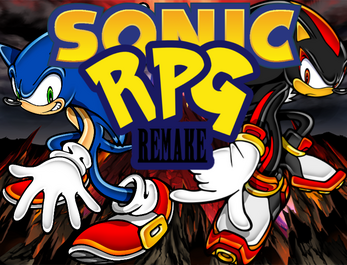
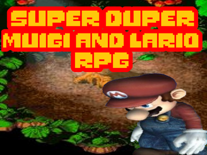
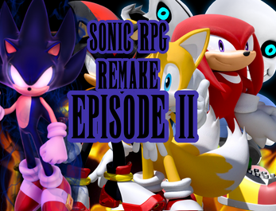
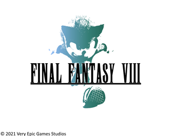
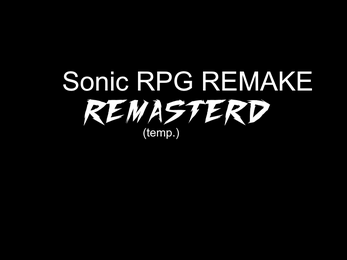
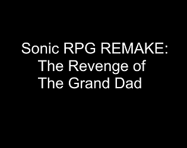

Jamie O'Neill
Founder. CEO. Visionary
Very Epic Games Studios Projects
|  | Sonic RPG Remake Following the massive success of "sanic de hedgehog gam" Sonic RPG Remake was created. Taking the breathtaking story of it's predecessor and expanding upon it while also adding new gameplay elements led Sonic RPG Remake to worldwide critical acclaim. |
|  | Super Duper Muigi and Lario RPG The first spin-off to the Sonic RPG franchise. This game stars original characters Muigi and Lario and their adventures that will eventually lead to a crossover with the Sonic RPG franchise. |
|  | Sonic RPG Remake - Episode II The exciting sequel to the Sonic RPG Remake. New and familiar faces join together to prepare for the ultimate evil following the events of the first game. |
|  | Final Fantasy VIII Description (temp) |
|  | Sonic RPG Remake: Remastered (tentative title) Description (temp) |
|  | Sonic RPG Remake Part 3 (tentative title) The exciting conclusion to the Sonic RPG franchise. Originally scheduled for release in 2021 but has been put on a haitus to ensure the game meets my true vision. |